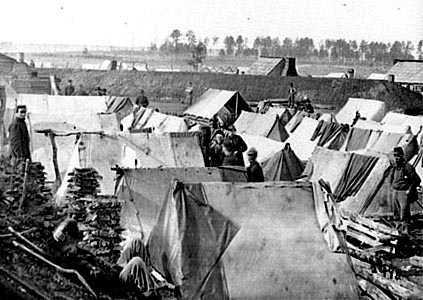
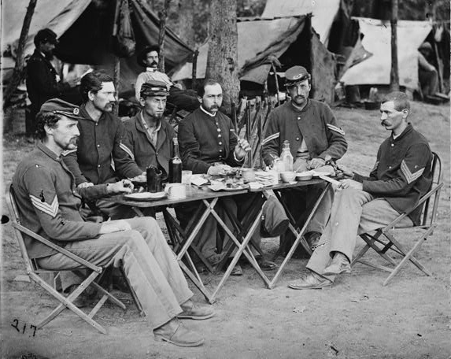
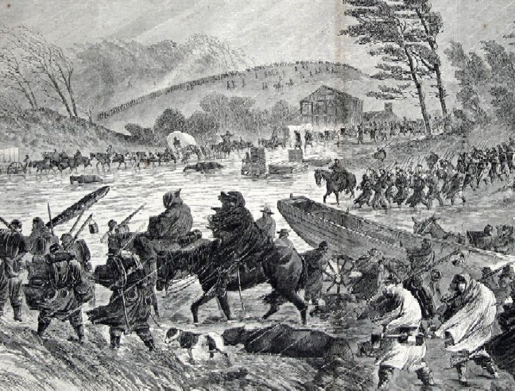
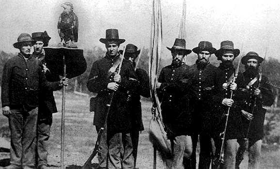

|
The soldier's life was not entirely composed of the horrors
of battle, hospital, and prison. By far the greatest portion
of his time in the army would be occupied in the relatively
mundane activities of the camp and the march. There his
concerns centered on keeping warm and dry, getting enough
food (preferably appetizing food), and communicating with
his friends and family back home by sending and receiving
letters.
Food was a subject that never seemed to be far from the
soldier's thoughts. Active young men could consume a great
deal of it, and the Civil War soldiers devoted considerable
effort to getting more and better "vittles". This effort was
especially important for Confederate soldiers, whose
government did not do a very good job of feeding them.
Ironically, the one area of economic life in which the South
excelled was agriculture, and, indeed, foodstuffs remained
abundant throughout most of the region right up to the end
of the war. That the gray-clad soldiers did not eat better
was the result of poor transportation facilities as well as
the unwise policies of the Confederate government in fixing
prices at which it would purchase foodstuffs rather than buy
them on the open market. Since the same government was
financing the war largely by printing money, thereby
generating massive inflation, the fixed prices were
unrealistic. As is the case when the price of any commodity

When in camp, especially for long periods
of time, soldiers attempted to re-create the most important
elements of their home life. Some were more able to do so
than others.
|
is set below market value, the result was scarcity. The
Confederate government generally could not supply its
soldiers with full rations even though plenty of food could
be found in the South. Typical Confederate rations might
include corn pone and bacon, pork, or beef, if available.
By contrast, Northern soldiers were probably the best fed
in the history of warfare up to that time. The North had
plenty of farms and packinghouses as well as the railroads
to carry what it produced. The standard U.S. ration would
have been enough to fatten a man except during lines of the
most vigorous and sustained marching. That Union soldiers
did not grow stout was the result of two factors: the
exigencies of operations often kept them from receiving
their officially allotted rations; and the rations
themselves, though plentiful, were of low quality and
unappealing. The chief components were salt pork (also known
as side meat or sowbelly), and hardtack. The latter was made
of flour, water, and salt, cooked and aged to approximately
the consistency of armor. Soldiers devised various
expedients for rendering these items more palatable. A
favorite preparation involved pounding the hardtack to
crumbs with a rifle butt and then frying it with pork
grease. Not surprisingly, bowel complaints were common. As
for coffee, the soldiers drank it with sugar at a rate of a
quart or more per man per day; they munched it in the bean
if they did not have time to build fires and brew it.
Soldiers of both sides added liberally to the monotonous
diet provided by their governments. Northern soldiers might
make purchases from the sutler, a civilian merchant who had
a concession for trade in each regiment, but the men
complained that the sutler's goods were inferior and his
prices outrageous. Sometimes no sutler was present;
sometimes no money was in pocket. Otherwise the chief means
of expanding the diet was by foraging. (In peacetime,
foraging was known as stealing.) In the enemy's country, it
was relatively easy to deal with the moral questions raised
by this practice. Lee's hungry troops foraged cheerfully
during their June and July 1863 excursion into Pennsylvania,
and Union troops did the same in their war-long progress
through the South. Officers might approve or not--the
soldiers were not to be thwarted. Pigs encountered in the
South almost inevitably turned out to be stubborn "Rebels"
steadfastly refusing to take the Oath of Allegiance when
called upon to do so by Federal soldiers, who then, of
course, could see no choice but to bayonet the defiant
porkers.
Such practices were much harder to justify when directed
toward one's own people, and yet hunger and a boring diet
being what they were, some soldiers did steal from friendly
civilians. John G. Given, a twenty-year-old recruit in the
124th Illinois, wrote to his brother from Camp Butler, near
Springfield, where that regiment was being organized:
"Stealing is the occupation of a great many of the soldiers,
and the country within a mile of camp is almost destitute of
anything that could be appropriated to the use of the
soldiers." The corn in a large field near the camp had "all
been pressed into the service of the U.S. or rather it has
been pressed into those who are serving the U.S. for the
soldiers have paid so many nocturnal [visits] to it that
when the owner goes to husk it he'll find it missing." Given
had to confess that he too was guilty, having taken some hay
from a nearby field in order to make a bed for himself, and
his conscience was not easy about it. "If we were among the
secesh I would glory in stealing every thing they had," he
explained, "but I don't like to steal from those who are
loyal to the Union."
Like Given, many Civil War soldiers had to give thought
not only to how they might fill their bellies but also to
how they might sleep warm and tolerably dry. The government
usually supplied a tent of some sort--the familiar
wedge-tent, or the tall, conical Sibley tent, which could
accommodate a dozen men and a portable stove. Far more
often, however, it was the two-man shelter, the ubiquitous
|

Civil War pup tents
|
"pup tent." This practical but unbeloved equipment involved
two sheets of cotton duck, their edges variously provided
with buttons and buttonholes. Each man carried one, and two
comrades buttoned these "shelter-halves" together at night
to make a tent, rigged up with whatever sticks they could
scrounge for tent poles. Sometimes a third man would join
them, his shelter-half being buttoned in on one end to
provide more cover for what was by then a crowded sleeping
space. In any case, the floor of the tent was the bare
ground, unless the soldier had a poncho or oilcloth blanket
to spread under him. Those who did not, like John Given,
helped themselves to some unfortunate farmer's straw or hay.
The quest for better food and shelter, consuming as it
might be, nevertheless left soldiers with abundant time on
their hands. In this war as in others, the soldier's life
consisted of long periods of intense boredom punctuated by
brief periods of stark terror. Drill was part of the
routine, but even a hard-driving regimental commander rarely
drilled his men more than six hours per day. Guarding and
maintaining the camp took additional time, but usually the
soldiers were left at loose ends for a few hours each day.
Some gambled. Cards were the most popular game of chance,
but men might bet on anything. Games like checkers or
backgammon might or might not be betting matters. Soldiers
might also play, though rarely for gambling purposes,
mumblety-peg, a contest of accuracy in throwing
pocketknives; or "slap-jackets," an absurd game in which two
contestants locked left arms and switched each other's backs
with their right. Baseball was a new sport that grew rapidly
in popularity in the army camps Its origins are obscure, but
it was not invented by Union General Abner Doubleday.
A large segment of the soldiers on both sides--at least
as many as indulged in gambling--took part in religious
services. Observers would later speak of fervent "revivals"
in the camps, but the movement was so widespread as to be
almost a single continuous revival, from late 1862 to the
end of the war, punctuated by the interruptions caused by
combat operations. Preaching services, prayer meetings, and
"experience" meetings (in which individuals told of how God
had changed their lives) were numerous and well attended.
Another way to beguile the time in camp was reading, and
by far the favorite reading material was letters from home.
The soldiers' appetite for these was insatiable and
universal, and their own correspondence is filled with
scoldings and pleadings for friends and family to write
longer and more frequent letters. No detail of home life
could be too mundane, no excess of wordiness could tire
these bored and homesick men, and letters were reread until
they fell apart. Many men read the Bible or religious
tracts, which were distributed in large numbers by religious
organizations with the approval of army authorities. Others
read law, literature, or trashy dime novels.
Rations
The daily allowance for each Union soldier was about one
fifth more than that of the British Army, almost twice that
of the French, and compared even more favorably with that of
the Prussians, Austrians and Russians. It was also more
liberal than the official diet of Confederates. The
Southerners, after hopefully adopting the old army ration
early in the conflict, were forced repeatedly to cut it,
while the Federals in August 1861 effected a substantial
increase. Surgeon General William A. Hammond was on firm
ground when he boasted after this augmentation that the men
in blue had the most abundant food allowance of any soldiers
in the world.
Indeed, Union subsistence authorities were to conclude
after long experience that the issue was overly generous to
the point of encouraging waste. On their recommendation
Congress in June 1864 revoked the increase, but a provision
was retained which allowed substitution of fresh or
processed vegetables for other items in the ration.
Throughout the conflict, regulations permitted company
commanders to sell back to the subsistence department any
portion of the authorized ration not used by their men, the
money thus obtained to become a part of the company fund. It
was the intent of higher authorities that company commanders
use the money accumulated for supplying their men with items
not obtainable from commissaries and thus add variety to
camp fare. But it seems that this wisely conceived aim
rarely materialized in actual practice. Some captains did
|

When their lines of supply were properly
established, Civil War soldiers--especially those in the Union
Army--ate fairly well.
|
not know about the company fund; others did not want to be
bothered with administering it; and still others
appropriated it to their own use. One Yank of unusual
intelligence and broad experience wrote after the war: "I
have yet to learn of the first company whose members ever
received any revenue from such a source, although the name
of Company Fund is a familiar one to every veteran."
The specification of abundant fare by high authorities
did not necessarily mean that the rank and file were
consistently well fed. Far from it. Reports of officers and
comments of soldiers reveal the greatest variation in the
quantity of food actually made available to the men who did
the shooting, As one lowly consumer aptly put it early in
the war: "Some days we live first rate, and the next we
don't have half enough."
Almost every regiment suffered occasional periods of
hunger, though usually these did not last more than a few
days. But the course of the war was marked by a surprising
number of what might be called major food crises, when
deprivation extended over a considerable period and involved
large numbers of men.
Several factors contributed to the food shortages
experienced by the men in blue. Fare was often scant in the
early part of the war because officers responsible for
drawing and issuing rations were not fully acquainted with
army procedure. Failure of supply agencies to have the
necessary stocks at the right places at the right time also
led to instances of want. This appears to have been the
situation at Savannah during Sherman's sojourn in that city.
An officer of the Inspector General's Department reported in
February 1865: "There was an inexcusable neglect or delay in
furnishing rations to the army ... Up to the time of leaving
Savannah the QM [Quartermaster] & Commissary Depts failed
most signally to supply this command with necessary
subsistence. The men actually suffered."
Shortages were most common during periods of rapid
movement and active fighting. "When intensive campaigns were
in progress, or when the fortunes of war closed channels of
supply, as at Chattanooga, reduced fare was unavoidable. But
sometimes soldiers brought hunger upon themselves by the
improvident practice of consuming several days' rations
shortly after their issue.
Yanks frequently attributed their meager fare to corrupt
officers, and unquestionably some of those involved in the
procurement and distribution of food were dishonest. It is
improbable, however, that peculation was nearly so prevalent
as the soldiers charged.
Two specific instances clearly demonstrate how
selfishness, indifference and lethargy on the part of
officers sometimes caused the enlisted men to receive less
than their due allowance of food. In the second winter of
the war a scurvy threat occurred in the Army of the
Cumberland. General William S. Rosecrans was perplexed,
since the commissary records indicated an issue of 100
barrels of vegetables daily in his command, and he had taken
it for granted that this food was being consumed by the
soldiers. But on investigation he was shocked to discover
"that one fourth in amount of this issue went to the staff
officers and their families at Headquarters, and that of the
remaining three-fourths, the Commissaries of the various
Corps, Divisions and Brigades obtained the larger portions,
so that the Regimental Commissaries who supplied the wants
of the private soldiers were left almost unprovided."
Further inquiry by medical authorities "revealed the
extraordinary fact that although this very liberal daily
distribution was shown by the books ... still the soldiers
had not received on an average from the Government more than
three rations of vegetables during the twelve months ending
on the first of April, 1863."
A similar instance occurred in the latter part of 1864 in
the District of West Florida. There an investigation,
inspired by appearance of scurvy, revealed that while
officers were purchasing fresh vegetables and other choice
items liberally for themselves they were not having
comparable distribution made to the men. The table of
returns for September showed that of 10,658 pounds of
potatoes received by the Commissary Department the 250
officers received 1,850 pounds while only 165 pounds were
issued to the 3,850 men; of 1,324 gallons of pickles,
officers drew 190 gallons and the men 162 gallons; issues
from a stock of 14,249 pounds of dried apples were 1,749 to
officers and none to the men. The figures on whisky are
especially interesting: from a store of 2,345 gallons the
officers obtained 434 gallons and the men (who could not
purchase commissary liquors as the officers but had to
depend on commanders to order its issue as part of the
ration) drew only 162 gallons; in other words, officers
obtained on the average one and seven-tenths gallons of
whisky each during the month, and the men forty-two
one-thousandths!
The culpability of these officers was noted in
Washington, a high-level staff member writing on a report
forwarded from department headquarters: "The officers seem
to have been most negligent of their men ... They seem to
have appropriated the major portion of everything to their
own use and let the men get along the best they could."
Whether or not these or the officers were disciplined is not
known.
The dietary deficiencies suffered by troops in West
Florida in 1864 were due to failures of distribution. The
same could be said of food shortages in general. Uncle Sam
had at his command enough food to provide amply for all who
wore the blue. The fact that soldiers were sometimes hungry
was due to his inability always to make it available to them
when they needed it.
Billy Yank was not solely dependent on Uncle Sam for his
subsistence. His army rations were often supplemented by the
homefolk. Soldier letters reveal a considerable flow of
boxes, packed with all sorts of food, originating in every
loyal state and extending to all areas where Federal troops
were encamped. The most active channels of home-to-soldier
supply were from Northeastern communities to the Army of the
Potomac and from the Midwest to troops stationed along the
Mississippi River and its tributaries. Rough handling along
the way frequently jumbled contents of these shipments, but
damaged boxes were better than none at all. Experience led
to improvements in packing and recipients became experts at
salvage.
The Sanitary Commission and other volunteer organizations
also distributed food from time to time. During the scurvy
scare in Rosecrans' command early in 1863, the Sanitary
Commission made available a vast quantity of vegetables, and
in February 1865 Rebecca Usher, representing the Maine State
Agency at City Point, Virginia, reported receipt of
twenty-eight barrels of vegetables for Maine soldiers. "The
soldiers roasted potatoes all day in the ashes in the
reading room," she wrote. "The soldiers come in and ask for
a potato as if it was an article of the greatest luxury" She
also told of giving out mince pies, apples, sauerkraut and
other items that must have brought delight to the
recipients.
Sutlers also helped relieve the scantiness and monotony
of camp fare, but their cakes, pies, butter, cheese, apples
and other delicacies were offered at prices which frequently
placed them beyond the reach of the common soldier. Yanks
often complained that sutlers were never around except for
brief intervals following payday.
The food venders most often patronized by the soldiers
seem to have been native peddlers who, as season, location
and other circumstances permitted, went through the camps
selling pies, bread, butter, milk, fruit, vegetables,
watermelons and oysters. A Yank wrote from Savannah,
Georgia, in January 1865: "The Negroes are selling all the
oysters they can get to our men. The soldier takes the tin
cup and dips it into the tub or bucket of oysters, fills it
full and then drinks the oysters as if he was drinking
water."
Yanks occasionally supplemented their fare by eating at
Southern tables. Sometimes they were fed without charge and
again they dined as paying guests. Blacks, in view of their
friendlier attitude toward the invaders, played host far
more frequently than whites. The meals served in slaves'
cabins were normally simple, consisting usually of such
items as hoecake, corn bread, field peas, sweet potatoes and
turnip greens, and now and then a piece of pork. Sometimes
the visitors brought with them flour, sugar, meat and other
ingredients not easily obtainable by civilians. Whatever the
nature of the meal thus obtained, it afforded relief from
camp offerings and was consumed with relish.
The Hardships of Soldiering
Homesickness, foul weather, filth, lack of privacy, stern
discipline, and general discomfort all combined in time to
produce negative views of soldier life. Happy enlistees who
gaily tramped away to be part of a neat little war full of
glory soon found themselves part of an environment none of
them had ever imagined. Captain Oliver Wendell Holmes, Jr.,
surmounted the problem confronting all Civil War soldiers.
"I started in this thing a boy," he wrote his mother late in
the war. "I'm now a man." Achieving that transition involved
enduring a host of hardships.
The first rude awakening was weather and how quickly it
caused army life to lose its glamour. Oppressive heat and
stifling humidity prevailed during most of the months in the
field. Flies and mosquitoes swarmed at every movement. Many
camps acquired an overbearing stench because of the lack of
attention given to garbage pits and latrine procedures. The
drinking water was usually muddy and warm. A surgeon in the
5th New Hampshire arrived at a Virginia camp in 1862 and
recoiled at "the barefooted boys, the sallow men, the
threadbare officers and seedy generals, the diarrhea and
dysentery, the yellow eyes and malarious faces, the beds
upon the bare earth on the mud, the mist and the rain." Such
sights, he concluded, totally shattered his "pre-conceived
ideas of knight-errantry,"
When mud was not reducing a camp to the status of a
swamp, dust was stifling. A Connecticut soldier observed in
the summer of 1864 that taking a stroll around the
regimental area was akin to walking in an ash heap, that
within minutes "one's mouth will be so full of dust that you
do not want your teeth to touch one another." During one
severely dry period, a Federal artillerist swore that
whenever a grasshopper jumped up, it raised so much dust as
to cause the Confederates to report the Union army on the
move.
The second shock to most soldiers came with the marches
the units had to make. A Civil War army moved by foot. It
often journeyed great distances to maneuver into position.
Men were walking more at one time than they had ever done
previously. The ordeal quickly lost all vacation-like
aspects. A soldier in the 83rd Pennsylvania wrote of his

Soldiers marching en route to the Battle of Antietam
|
first military hike: "After we had gone three or four miles,
the men began to throw off blankets, coats and knapsacks,
and towards night the road was strewn with them. I saw men
fall down who could not rise without help. The rain soaked
everything woolen full of water and made our loads almost
mule loads ... I never was so tired before." A Massachusetts
soldier was even more opinionated by late 1861. "Here we are
marching from one end of Virginia to the other, wearing
ourselves out and yet nothing seems to be accomplished by it
... this everlasting advancing and retreating I am sick of.
My God! Hasten the end of this accursed war."
Men usually marched four abreast, sometimes in the road
and sometimes alongside it. The average speed was about two
and a half miles per hour. The manner of march was "route
step," which meant "go as you please." However, a
Massachusetts soldier pointed out, "the men were generally
in step, because it was easier." Wagon trains and artillery
traveled the same roads as infantry, and their faster pace
forced the marching columns repeatedly to take to the
ditches. Moreover, as veterans rapidly learned, marching
outside the road raised less choking dust and thereby
reduced "trouble and annoyance."
A typical day's march began somewhat awkwardly, a private
in the 19th Massachusetts recalled. "The men threw their
muskets over their shoulders like men starting out to hunt,
regardless of the manual of arms; others were at the right
or left shoulder shift, while occasionally a man would carry
his musket with the hammer resting on the shoulder. Another
who had been slow at preparing came stumbling along, trying
to fasten his roundabout with his musket under his arm and
the barrel punching his file leader in the back. So the
day's work began."
Being at the head of the column was very much preferred.
Frontliners got skirmish and picket-duty first and thus
could get a night of uninterrupted sleep. They also used the
road when it was in its best shape. In addition, being the
first elements to halt, they got the jump on foraging and
gathering firewood for the bivouac. Troops at the end of the
line fared miserably. For one thing, as the 22nd
Massachusetts once discovered, they had to eat the dust of
the whole procession. "The perspiration flowed in streams,"
the regimental historian wrote; "the dust almost suffocated,
and soon ... one could hardly distinguish an object a dozen
yards away. Fine and penetrating, the dust sifted into the
eyes, nose and mouth, and soon changed the appearance of the
marching column. The expressions of the countenances were
certainly very ludicrous and one could scarcely refrain from
laughing as the dust-and-sweat-streaked face of some
individual would look up with a rueful glance, with such a
pleading, beseeching expression, seemingly asking for
sympathies which under the circumstances could not be given,
so nearly alike was the condition of all."
When there was no dust, there was mud. "We took one step
forward and two back-ward," Private Bissell of Connecticut
wrote of one struggling march. A member of the 10th Illinois
wrote of a similar trek: "At times it seemed almost as if
pandemonium had let loose. Everybody and everything seemed
to be out of sorts. The horses and mules were mad, and some
of them balky, the drivers were mad, and the soldiers were
not in the best of humor ... I mean by this that bad words
were issued."
For at least nine months of the year, heat was another
impediment. Massachusetts soldier Ernest Waitt captured the
misery of marching under the summer's fireball: "The sun was
now well up and the air intensely hot, causing the
perspiration to run out and, running down the face, drip
from the nose and chin. The salty liquid got into the eyes,
causing them to burn and smart and it ran down from under
the cap, through the dust and down the sides of the face
which was soon covered with muddy streaks, the result of
repeated wipings upon the sleeves of the blouse."
Scarcity of water characterized most marches. After one
all-day tramp, a New England soldier confessed: "I never was
so thirsty in my life and I hope I never shall be again."
Soldiers learned to grab a handful of water from any nearby
pond they passed on a march. "How many wiggletails and
tadpoles I have drunk will never be known," wrote a
Confederate. Gullies where rainwater had collected became
veritable oases. When a soldier took a drink from one, a
member of the 5th New Jersey swore, "the sand could be felt
and almost heard as it rattled down your throat."
Troops marched accordion-style all day as terrain changed
elevations or wagons broke down in the road. "We plodded
along at various rates of speed," an artilleryman noted,
"now a walk, now a trot, then a halt, then a slow, hardly
perceptible movement, then a rapid motion, as if we were
struck with compunction for having tarried at all, and felt
bound to make amends." If the march was strenuous, and a
mounted officer was setting the pace in front, shouts would
soon arise from the ranks: "Halt! Give us a rest!" or "Give
the horse a rest, never mind the men!" The column would wind
through woods, across fields, and up and down hills; soon
there was the inevitable dribbling to the rear as
ne'er-do-wells, skulkers, and men genuinely ill began to
drop back. By the time the rear elements finally reached
camp, the men in the front lines were already cooking
rations or had fallen asleep.
Night marches were especially fatiguing, a New York
soldier emphasized. The most difficult part "is usually the
frequent halts. The column often goes by jerks, making
|

The Army of the Potomac's "Mud March," undertaken
during the winter of 1862-63, was one of the most physically challenging--and ultimately
futile--tasks faced by any of the soldiers who participated in the Civil War.
|
sometimes only a few yards at a time, halting from five
minutes to an hour, and then moving a few yards further to
halt in the same manner. This tries the patience more than
anything else. The poor men sit down or lay down by the
road, and just as they are wandering off into dreams, their
ears are rudely stunned by the gruff 'Forward' and up they
scramble, half asleep and half awake." An Arkansas officer
noted: "I have seen numbers of men go to sleep marching
along the Roads at night and stager off just like a Drunk
man."
If the troops were marching through a battle zone, or
were on an especially severe jaunt, another negative element
appeared. The 128th Illinois' Laforest Dunham wrote home in
March 1864: "Let people talk about thare balm of a thousand
flower, but we can beat that heare, we have the balm of a
thousand mules. The roads ar strewd with dead mules. It
beats any thing I ever hurd tell of."
Any long trek sorely taxed the physical condition of most
soldiers. Ill-fitting shoes triggered widespread lameness.
The feet of a New Jersey sergeant became swollen, blistered,
and infected during the several marches attendant to the
Fredericksburg campaign. Every time the regiment hatted and
the sergeant removed his shoes, he found blood and pus
acting as glue between sock and skin. When the march
resumed, fresh scabs "cut into the raw flesh like a knife."
Justus Silliman of the 17th Connecticut likewise
developed foot blisters. On the second day's hike, he
stated, "my gait was somewhat like that of a lame duck, but
I waddled along at first as fast as the remainder of our
crew, but towards noon I brought up the rear." One of the
classic quotations by a Civil War soldier was the Rhode
Island private who unthinkingly wrote his wife after a
painful march: "I'm all right except the doggorned blisters
on my feet, and I hope these few lines will find you
enjoying the same blessings."
Corporal Cort of the 92nd Illinois observed after one
gruelling advance: "Some of the largest and stoutest men
were the first to give out while the small ones stuck to it
but I find that it is not the physical strength but the
determination that carrys one through a long march." Ted
Barclay of the 4th Virginia said the same thing but in a
light vein. "Well, here I am at the old camp near
Winchester, broken down, halt, lame, blind, crippled, and
whatever else you can think of-but I am still kicking."
The fortitude these citizen-soldiers displayed was
extraordinary on a regular basis. In January 1863, a Texas
officer wrote proudly of his troops: "It appears almost
incredible that men could exhibit such reckless
indifference, such strength of will and determination ...
The war, however, developed and decided some strange
theories as to the amount of physical powers which the human
frame contained--powers of enduring fatigue, hunger, thirst,
heat and cold which would scarcely have been believed
before, if asserted."
Two or three times a day, Johnny Rebs and Billy Yanks
confronted food supplies. What they had to eat prompted the
loudest and most widespread complaints by Civil War
soldiers. Army rations of that day offered little
sustenance, for what the troops received was poor in quality
and monotonous; and so often it was in small quantities.
Richmond artillerist George Eggleston offered one
explanation for scanty issues. "Red tape was supreme, and no
sword was permitted to cut it."
The thinking on both sides during the war was that if the
government supplied the basic foodstuffs to the men in large
enough proportions, the troops would make out
satisfactorily. Such thinking worked out fairly well during
long encampments, when rations were regular and unencumbered
by government bureaucracy. Yet when the armies were on the
move, or in battle, food was both scarce and of suspect
quality. As an Indiana soldier wrote after the Seven Days'
campaign: "Rotten meat, mouldy bread & parched beans for
coffee are common occurrences now."
Rations issued to the soldier by commissary departments
ranged from mediocre to downright awful. Considering the
combination of irregular and unbalanced diets, the ignorance
of cooking methods, and a preference of the men for frying
everything in a sea of grease, one might wonder how the
troops kept their health. The answer, of course, is that
many of them did not. That is why rations were the worst
problem in keeping an army fully supplied. One Union surgeon
reported that he was having difficulty saving men from
"death from the frying pan." A member of the 1st North
Carolina concluded a description of skimpy rations by
stating to his father: "A soldier's life is calculated to
ruin a young man for business afterwards."
Preparation of meals went through a trial-and-error
period at war's outset. A Pennsylvanian noted that "the
company-cook system introduced was found to be a total
failure, principally because of the selection for the trying
position of the most uncouth and disqualified men in the
companies. As a result of dissatisfaction company cooks were
discontinued, and each mess of three or four comrades
accepted the raw rations distributed to the companies and
did their own cooking in messes." Different tastes, among
other factors, eventually led most soldiers to prepare their
meals individually. This required no great talent; the
average soldier did little more than fry a slab of bacon or
salt pork, and boil coffee to accompany the hard bread which
completed the normal meal.
"Coffee was the main stay," a private in the 10th
Massachusetts stated. "Without it was misery indeed." This
"subtle poison," a Maine soldier added, was "considered as
indispensable to him as the air he breathes." Army officials
worked hard to insure that if only one commodity of
nourishment was issued, it would be coffee. Union surgeon A.
C. Swartwelder provided a long discourse on army coffee.
The bean "is furnished to the soldier in the crude
state-that is, just from the sack. The first thing,
therefore, he has to do is to 'toast' it." Such was done in
a camp kettle for 10-15 minutes or longer. The result was
often that "instead of 'toasted' coffee, the soldier had
charcoal." To reduce the beans to powder, men used rifle
butts and flat boulders, or else left it in the kettle and
tamped it down with a bayonet or other instrument. The
surgeon concluded: "I am thoroughly convinced that a pint of
good coffee is a better beverage for the soldier than all
the rye, bourbon, brandy. ... It has no equal as a
preparation for a hard day's match, nor any rival as a
restorative after one."
Give soldiers five minutes' idle time and most of them
would start boiling water for coffee. "Coffee and sugar we
kept in a bag mixed together," Alfred Bellard of the 5th New
Jersey wrote, "and when we wanted a cup of coffee we put two
tablespoons full of the mixture in a pint cup of water and
placing the cup on two sticks with some hot coals beneath it
let it boil." A normal day's coffee ration was sufficient to
make three to four pints.
Confederates rarely had coffee in adequate quantities.
The blockade of Southern ports cut off much of this luxury
and forced soldiers (as well as civilians) to resort to
substitutes brewed from peanuts, potatoes, peas, corn, and
rye.
Making Friends With the Enemy
In the lulls between battles, enemy troops at times
established temporary bonds of friendship. The rival forces
shared a common language and culture, of course, and a
certain spirit of brotherhood persisted amid the
hostilities.
One form of fraternization involved the trade of
treasured items between the opposing ranks. Facing each
other across a river, enemy pickets sometimes sent little
hand-carved sailboats to the opposite shore, exchanging
coffee that the Southern men craved for tobacco favored by
the Federals. One of Robert E. Lee's soldiers remembered a
day in the spring of 1862 when the Rappahannock River near
Fredericksburg, Virginia, was "clothed with such a fairy
fleet."
Both sides frequently swapped insults, which they termed
"smart talk" or "jawing." During the long siege of
Vicksburg, a Confederate shouted across the lines, "When is
Grant going to march into Vicksburg?" and received the
reply, "When you get your last mule and dog ate up."
Dealings between enemy soldiers were not confined to
banter or barter. Foes meeting in the no man's land between
the lines might act in a spirit of simple kindness. On one
occasion, two unarmed Confederates of the 12th Georgia,
carrying a wounded comrade to the hospital, stumbled upon a
Federal picket. Instead of demanding their surrender, the
Federals directed the men back toward their own lines.
Sometimes, pickets of both sides met surreptitiously to
drink and play cards. And after battles, burial details
often found themselves rubbing shoulders with the enemy as
they collected and buried their fallen comrades. One
Southern detail lacked sufficient shovels and had to borrow
some from Federals performing the same grim task. Once the
men started talking on occasions such as these, they would
often show each other family pictures and letters from their
loved ones back home.
Soldiers found a common ground in music, and rival bands
were known to serenade each other from opposing camps. At
Fredericksburg, Federal musicians played a medley of
Northern airs. "Now give us some of ours," Confederates
hollered from across the river. Obligingly, the band swung
into "Dixie," "My Maryland" and "Bonnie Blue Flag." The
concert closed with both sides singing "Home Sweet Home" at
the top of their lungs.
Such displays of comradeship were strictly against
regulations, of course. But many officers winked at the
infringements, taking the view that a little friendliness
was harmless so long as the men did their duty when the
battle call sounded.
Besides, the officers themselves were lar from guiltless.
A number of them had been on good terms in the prewar Army
and were quick to show their respect for their old
companions. General Ulysses S. Grant, on learning at
Petersburg, Virginia, that the bonfires along the
Confederate line were in celebration of General George
Pickett's newborn son, ordered his own troops to light
similar congratulatory fires and sent his old Mexican War
comrade a child's silver service through the lines. In
occupied Williamsburg, Virginia, during the spring of 1862,
Union cavalry officer George Armstrong Custer served as best
man at the wedding of a West Point classmate, a prisoner of
the Federals. Custer wore the blue dress uniform of a
Federal Army captain; the bridegroom appeared in the gray
dress uniform of a Confederate Army captain.
Many men in both Armies would have heartily agreed with
the Confederate soldier who, after a long talk with a
Federal between the lines, wrote home wistfully, "We could
have settled the war in 30 minutes had it been left to us."
Regimental Mascots
The morale of the rank and file was always elevated by the
presence of pets. The soldiers enjoyed playing with the
animals and were eager to endow their mascots with
larger-than-life attributes. The 12th Wisconsin Volunteers
had a tame bear that marched with them all the way to
Missouri, and even the lowliest stray dog could become the
stuff of regimental legend.
When the volunteer firemen of Niagara, Pennsylvania,
|

The 8th Wisconsin Infantry with their eagle mascot
"Old Abe."
|
enlisted en masse in their state's 102nd Infantry, they
brought along a doleful black-and-white bull terrier named
Jack, whose subsequent career spanned nearly all the
regiment's battles in Virginia and Maryland. It was said
that he understood bugle calls and obeyed only the men of
his regiment, and that after a battle he searched out the
wounded and the dead.
According to a tongue-in-cheek account by the regimental
historian, Jack was severely wounded at Malvern Hill.
Captured by the enemy at Savage's Station, he managed to
escape. His barking was heard above the din at Antietam, and
he was wounded again at Fredericksburg. At Salem Church, he
was taken prisoner a second time. Six months later,
according to the chronicler, he was exchanged for a
Confederate soldier at Belle Isle.
Rejoining his unit, Jack went south under General Grant
through the bloody campaigns of the Wilderness and
Spotsylvania and the siege of Petersburg. Alas, he did not
witness the final victory at Appomattox: In 1864, a few days
after his Comrades gave him a beautiful silver collar worth
$75, he disappeared forever, apparently the victim of a
robber.
Many other dogs won fame for their apocryphal exploits on
the battlefield. Major, a lion-hearted mutt who accompanied
the 10th Maine--later reorganized as the 29th Maine--was
said to demonstrate his mettle by snapping at Confederate
minie balls in flight. Eventually he caught one--and
perished.
Then there was the dog who entered legend at Antietam.
During the battle, the beast's owner, Captain Werner von
Bachelle of the 6th Wisconsin, fell mortally wounded. As the
story went, the pet stayed at von Bachelle's side and the
next morning was found atop the corpse, shot dead while
defending his master.
The most celebrated of all Civil War mascots was the 8th
Wisconsin's eagle, Old Abe, who was carried into battle
tethered to a perch alongside the regimental colors. During
the War, he had no fewer than six bearers, three of whom
were shot from under him. When the regiment was mustered out
in 1864, Old Abe was sent to the state capital at Madison
where he resided until the end of his days in a special cage
at the Statehouse. Hundreds of photographs were made of him
both during and after the War, and by the time he died in
1881, he had become for millions a symbol of American
courage and fortitude.
Source: Steven C. Woodworth, ed., The Loyal, True, and Brave
(Wilmington, DE: Scholarly Resources, Inc., 2002), 137-146 and James I. Robertson,
Tenting Tonight: The Soldier's Life (New York: Time-Life Books, 1984), 151-158.
|